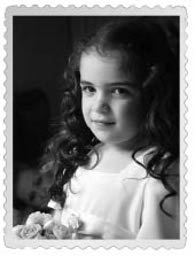

Simin
Simin İzgören, benim küçük kızım. 2005 yılında doğdu. Nasıl biri mi? Bir kere, insanın gözlerine bakar ve sözünü de hiç sakınmaz. Ne zaman yardımda bulunsanız mutlaka teşekkür eder. Okula yeni başladı ve hiç ısınmadı. (Dün “Talat elit at al” cümlesini yazdı ve “Bunları niye yazıyoruz ki?” diye sordu.) Kendi başına iş becerir, oyunlar kurar ve saatlerce oynayabilir. Sevgisini olduğu gibi yansıtır. Güzelliğini annesinden almış diye düşünüyorum. Allah bana daha güzel bir hediye veremezdi herhâlde. Kuzucuk.
